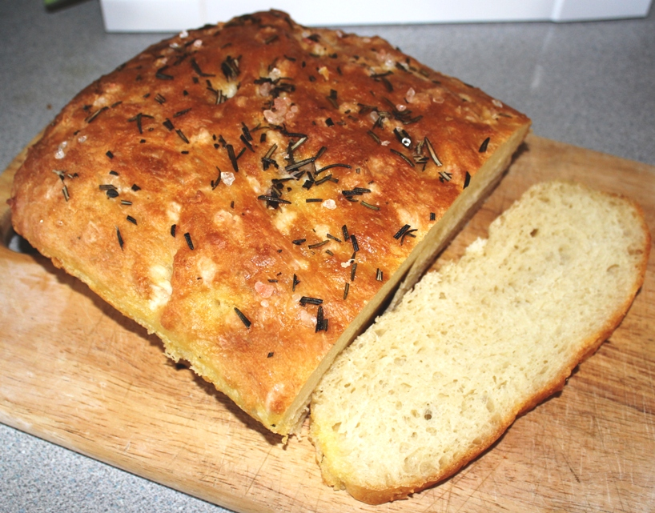

Recipes



Focaccia
Ingredients
For dough
- 50 g yeast
- 7 dl wheat flour
- 3/4 dl olive oil
- 4 dl water
- 1 tsp honey
To the top
- 3/4 dl olive oil
- Olives
- Cherry tomatoes
- Pinch of sea salt
Remember to experiment with the toppings! Focaccia is a versatile bread, so you can pretty much use any toppings you like.
Preparation
- Heat the water until it's lukewarm, then put yeast in it.
- Add salt. Add flour a bit at a time, remember to mix before adding more. Add honey.
- Knead the dough and add the olive oil at the end of kneading.
- Take the dough out of the bowl and knead it on an oiled surface for aprox 5 minutes. Let it proof until it's double the size.
- Oil the baking sheet/baking dish. Put the dough in so it fills the whole sheet/dish. Add 1/4 dl olive oil. Let it proof under the parchment paper for aprox 40 minutes.
- Press dents on the proofed dough and add rest of the olive oil (2/4 dl). Put olives, cherry tomatoes and sea salt on top, press them so they stay better.
- Bake at 225°C on the lower middle rack of the oven for 15-20 minutes.
- Remove the baked bread from the pan and let it cool before cutting it to serving sizes.
- Done!
Naan
Ingredients
For dough
- 11 g yeast
- aprox 10 dl wheat flour
- 200 g turkish yogurt
- 2 dl water
- 50 g melted butter
- 1 tsp sugar
- 1 tsp salt
To the top
- Butter
Preparation
- Heat the water and yogurt until they're lukewarm. Mix together yeast, salt and sugar.
- Add flour a bit at a time, remember to mix before adding more.
- Add the melted butter at the end before kneading. Knead the dough until it comes off the sides of the bowl.
- Cover the dough with a cloth and let it rise in a warm place for about 30 minutes.
- Divide the dough into portions and shape them into rounds, using a rolling pin and flour.
- Put the naan on the baking sheet without parchment paper.
- Bake the naan at 250°C for about 6 minutes on the top rack of the oven until brown spots appear on the surface.
- Remove the naan from the baking sheet and brush it with melted butter. Cover it with parchment paper and cloth to keep them soft.
- Done!
Brioche
Ingredients
For dough
- 25 g yeast
- 7 dl wheat flour
- 1 dl milk
- 150 g melted butter
- 2 egg
- 1/2 dl sugar
- 3/4 tsp salt
To the top
- 50 g butter
- 1 tbsp sugar
- 1/2 tbsp vanilla sugar
Greasing
- 1 yolk
Glazing
- Powdered sugar
Preparation
- Heat the milk until it's lukewarm, then put yeast in it.
- Add sugar, salt and eggs. Add half the flour a bit at a time, remember to mix before adding more. Add melted butter and rest of the flour.
- Let it rise for aprox 5 minutes. Roll the dough into a rectangle sheets. Fold the sheet into thirds and roll it back to its original size. Repeat this process 2-3 times. Let it rise for 5-10 minutes with a cloth covering it.
- Roll out the dough on a floured surface into a rectangle. Spread softened butter over the dough. Sprinkle with sugar evenly. Roll the dough from the long side.
- Cut the rolled dough into slices and place them in a greased tin with cut sides up. Let proof for about an hour before greasing with yolk.
- Bake in the lower or middle rack of the oven at 220°C for 5 minutes. Reduce the temperature to 200°C and bake aprox 10 minutes untile the buns are golden brown.
- Remove the buns from the tin and let them cool. Glaze with powdered sugar.
- Done!
Ciabatta
Ingredients
- 25 g yeast
- 5 dl cold water
- 2 tsp salt
- 2 tbsp oil
- aprox 9 dl wheat flour
- 1 tbsp syrup
- 1 dl rye flour
Preparation
- Put yeast in the cold water. Add salt and approximately half of the flour.
- Mix the dough into pasty mixture. Add the rye flour, syrup, oil and gradually add the rest of the flour.
- The dough should be as soft as possible. Sprinkle flour over the surface and cover the bowl with a cloth.
- Let it proof for 1-2 hours.
- Put the dough onto a floured surface and knead out the air bubbles. Divide the dough into two pieces.
- Shape the dough into two long loaves and place them on a baking sheet and flatten them.
- Cover them with a cloth and let it proof for 30 minutes.
- Bake the bread for about 20 minutes at 250 degrees on the lowest rack in the oven.
- Place a bowl of water in the oven while the bread is baking to create crispy crust.
- The bread is done when it sounds hollow when tapped on the bottom.